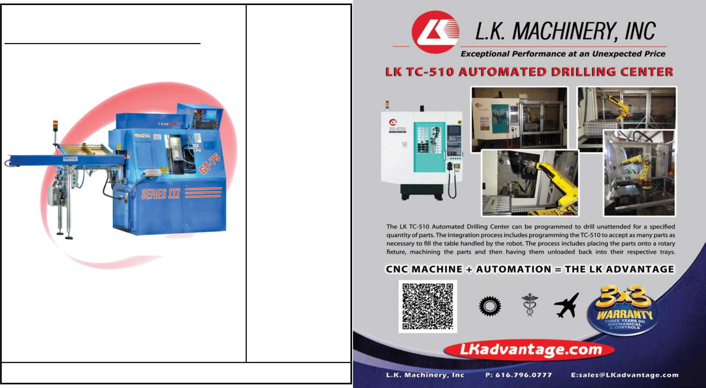

Omni
Turn
Fast... Precise... Affordable...
New Generation CNC!
GT-75 w/ZipLoader shown
Optional ZipLoader Specs:
1/8” - 1” dia; 1.5” - 26” long; 4 sec load/unload
Optional Parts-Hopper will hold hundreds of parts
F
call 541 332 7004
F
email
GT-75 $32,995!
Three axis synchronized; plane-switching for milling;
color LCD display; faster servo refresh;
USB program input; plug-compatible
with existing OmniTurn CNC’s.
OmniTurn has been building precision CNC slides in America for 23 years.
Ten models to choose from including fully enclosed GT-75, quick setup GT-Jr
and retrofit attachments for most popular bench lathes from $14,995
Omni
Turn
is a product
manufactured by NC Electronics, Inc.
who have have been building precision
CNC turning machines since 1987,
beginning with CNC conversion kits for
chuckers and toolroom lathes. NCE
was among the rst in the machine tool
industry to incorporate PC based CNC
technology.NCE has always used the
highest quality ground ballscrews and
linear guides available. The machine
base, slides and tooling plate are
precision-machined in America.
In 1994 we began producing the Om-
niTurn GT-75. The GT-75 is a fully
enclosed slant-bed turning center with
American-made high-precision spindle,
pneumatic collet closer, ood coolant,
and work lamp.
In 1998 we introduced the OmniTurn
GT-Jr. The GT-Jr has the same rugged
and precise base, table and spindle as
the GT-75, but without the enclosure,
which allows for very fast change-over
and setup.
OmniTurns are fast, precise and aord-
able. They are also reliable, easy to
operate and inexpensive to maintain.
There are thousands of OmniTurns in
use throughout the country earning a
prot for large corporations as well as
‘garage-shops’.
This machine is built entirely at our fac-
tory in Oregon. Easy setup! The GT-75
is shipped in a wooden frame as illus-
trated, for easy pallet-jack maneuvering
into place in your shop. Air requirements
are minimal: less than 3cfm at 80psi.
Electrical power
requirements are 220vac single or
three-phase, 20 amps. The machine
does not need to be bolted down. Lev-
eling pads are included; simply adjust
each pad to stabilize the machine. You
can set up your OmniTurn GT-75 with
no special tools, and be ready to run
parts very quickly.